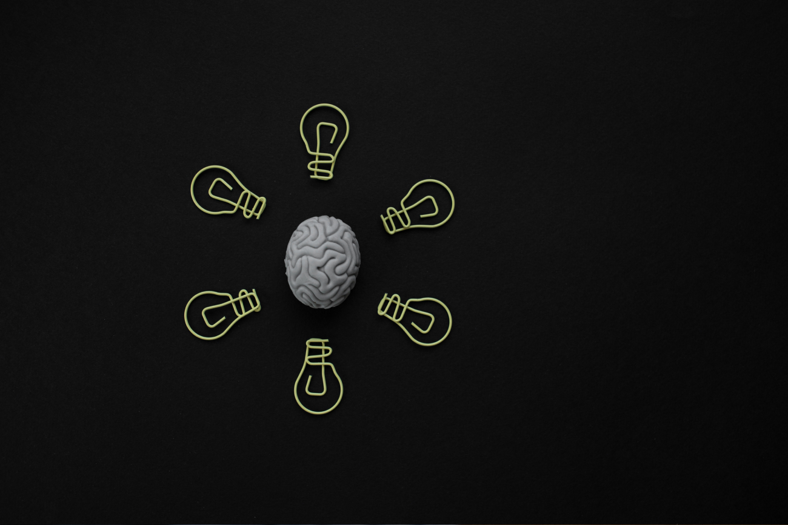

A lo largo de nuestra vida estamos continuamente aprendiendo. Y es que se suele relacionar el término "aprender" con la educación académica (colegios, institutos, universidades, ...), pero durante cualquier situación cotidiana nuestro sistema nervioso está adquiriendo conocimientos. Desde el bebé recién nacido relaciona que si llora le atenderán, hasta la abuela que utiliza su nuevo móvil, pasando por el adulto que asciende en su trabajo.
El aprendizaje es el proceso a través del cual se adquieren y desarrollan habilidades, conocimientos, conductas y valores. Y es que en este proceso median diferentes factores tanto cognitivos como la atención, la memoria, la percepción y el lenguaje entre otros; como factores emocionales, así como la motivación, la actitud o el estado de ánimo. La integración de todos estos procesos hace que el aprendizaje sea efectivo o no.
Nuestra finalidad
En Neurodiverso tenemos como finalidad, facilitar ese aprendizaje intentando de una forma adaptada individualmente, dar solución a cualquier dificultad que lo impida y atendiendo todos los factores que median en el proceso de aprendizaje, tanto cognitivos como afectivos. Para conocer el problema realizamos una primera fase de evaluación que marcará la hoja de ruta del tratamiento.
La evaluación se compone de:
• Una entrevista con los padres en la que se recogerá toda la información posible en diferentes ámbitos (académico, social, emocional, familiar, historial médico, …), de forma que conoceremos el funcionamiento del individuo.
• Valoración con pruebas específicas.
• Devolución de resultados, explicando el rendimiento obtenido en las pruebas pasadas mediante un informe. También se planteará la propuesta de intervención.
• Con todos los datos obtenidos durante todo el proceso de evaluación obtendremos un perfil cognitivo y socio-emocional, identificaremos el origen de sus dificultades, determinaremos los puntos fuertes y débiles en su aprendizaje, y se valorará la posibilidad de adaptaciones curriculares o metodológicas para el estudio.
A continuación, se propondrá una intervención según los resultados obtenidos, con el objetivo de rehabilitar las funciones cognitivas menos desarrolladas o con déficit en su funcionamiento.